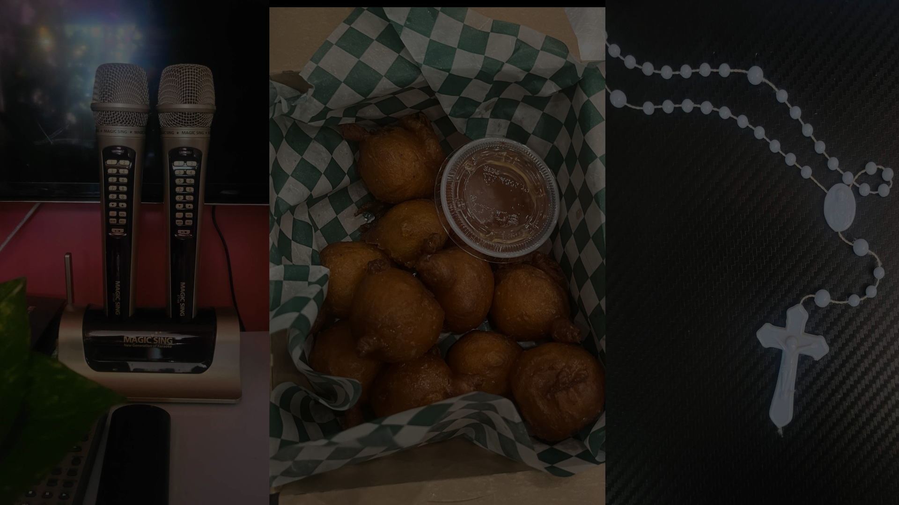
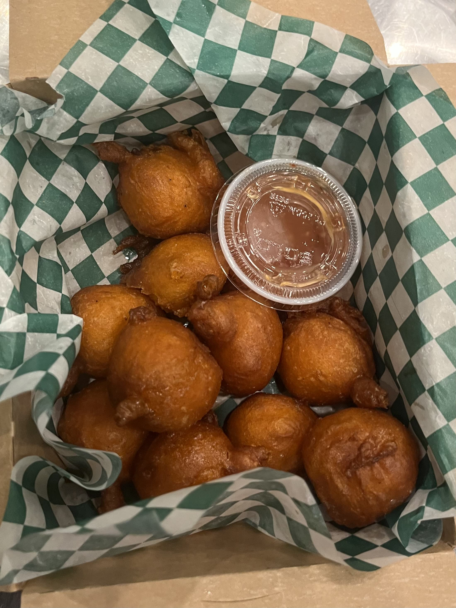

Traditions
from the Philippines


Karaoke is beloved by all Filipinnos. It's enjoyed by people of all ages and backgrounds. It serves as a social activity that brings friends, families, and communities together for fun and entertainment.: It's not uncommon to find karaoke machines set up in public places such as malls, parks, and even on the streets during festivals or special events. These setups encourage spontaneous singing sessions and add to the festive atmosphere.
Karaoke has become ingrained in Filipino popular culture and media, often depicted in movies, TV shows, and advertisements as a symbol of Filipino hospitality, camaraderie, and love for music.

"Kamayan" is a Filipino term that literally translates to "eating with your hands." It refers to a traditional way of dining in the Philippines where we use our hands instead of utensils to eat.
Religion plays a significant role in Filipino society, and the Philippines is predominantly Catholic, with approximately 80% of the population identifying as Roman Catholic. However, there is also a significant Muslim minority, as well as smaller communities of various Christian denominations, indigenous beliefs, and other religions.
These religious practices reflect the rich and diverse religious landscape of the Philippines and play a crucial role in shaping Filipino identity and culture.